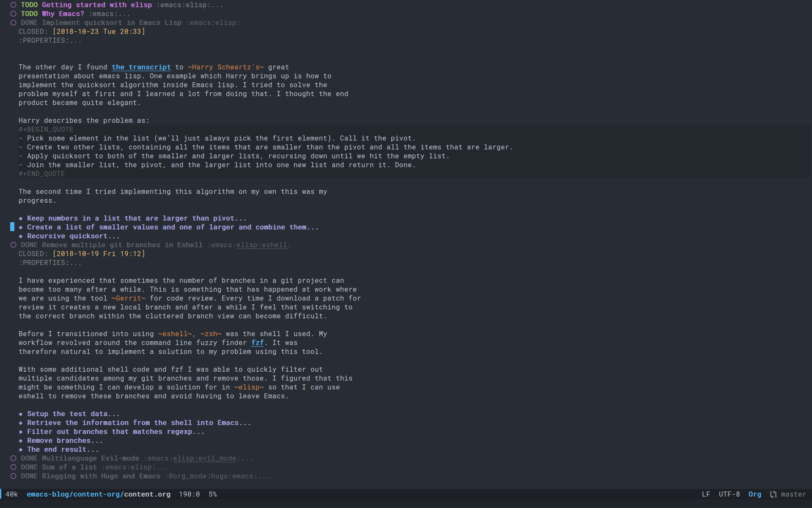
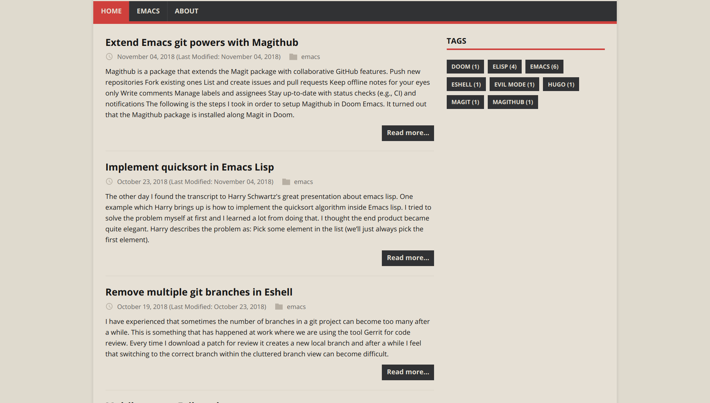
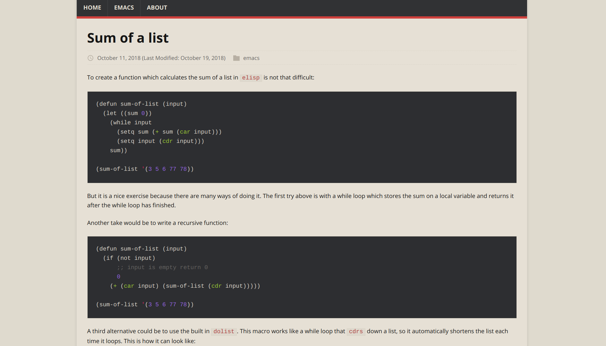

Summary
Org-mode + literate programming
Context(connect everything needed)Documentation(made easy)Hackable(change what we don't like)Exports(replaces other programs)
Blogging with Org-mode
The org-mode file

The site

A post

Thanks for listening